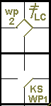
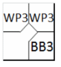

action { batter -> 3BRC }
/* Le batteur suivant gagne la première base sur un 'base on ball' */
action { batter -> BB }
/* Le lanceur fait un lancer fou, les deux coureurs avance */
action { runner1 -> wp , runner3 -> WP }

Un lancer fou est un lancer trop haut, trop bas ou trop à côté de la plaque de but pour être attrapé par le receveur avec un effort ordinaire [Définition des termes de l'OBR].
Exemple 45:
L'abréviation utilisée pour un lancer fou est « WP » suivie du numéro de l'ordre de frappe du joueur qui se trouve
au marbre au moment du lancer fou.
Le scoreur officiel doit attribuer un lancer fou lorsque la balle lancée de façon réglementaire
est soit si haute, si éloignée, ou si basse que le receveur ne peut l’arrêter et la contrôler avec un effort ordinaire,
permettant ainsi à un ou plusieurs coureurs d’avancer.
Il doit attribuer un lancer fou lorsqu’une balle lancée de façon réglementaire, touche le sol ou
la plaque de but avant d’atteindre le receveur et n’est pas attrapée par ce dernier, permettant à un ou plusieurs coureurs
d’avancer
[OBR 9.13(a)]
| WBSC | Transcription dans l'outil de scorage | Outil |
|---|---|---|
|
|
/* Le premier batteur frappe un triple dans le champ droit */ action { batter -> 3BRC } /* Le batteur suivant gagne la première base sur un 'base on ball' */ action { batter -> BB } /* Le lanceur fait un lancer fou, les deux coureurs avance */ action { runner1 -> wp , runner3 -> WP } |
|
Si plus d'un coureur avance sur un lancer fou, l'abréviation « WP » (en majuscules) est utilisée pour le coureur de tête, avec « wp » (en minuscules) pour les coureurs suivants.
EXCEPTION:
Exemple 46:
Dans le cas ou
Lorsque le troisième strike est un lancer fou, permettant au batteur d'atteindre la première base,le
scoreur officiel doit inscrire un strike out et un lancer fou.
[OBR 9.13(a)].
L’abréviation K suivie de WP (en majuscules) pour retrait sur trois prises (suivi, bien sûr, du nombre cumulé
de retraits sur trois prises pour ce lanceur) doit être utilisée pour le frappeur. L’abréviation « wp » (en minuscules) est
utilisée pour les coureurs qui avancent.
| WBSC | Transcription dans l'outil de scorage | Outil |
|---|---|---|

|
/* Le premier batteur frappe un double dans le champ gauche */ action { batter -> 2BLC } /* Sur le strike le batteur suivant swing et atteint la première base, le coureur avance */ action { batter -> KSWP , runner2 -> wp } |
 |
Exemple 47: Si un coureur avance de plus d'une base sur un lancer fou, une flèche est utilisée pour indiquer la poursuite de son avance.
| WBSC | Transcription dans l'outil de scorage | Outil |
|---|---|---|

|
/* Le batteur gagne la première base sur un 'base on ball' */ action { batter -> BB } /* Le coureur profite d'un lancer fou pour gagner deux bases */ action { runner1 -> WP+ } |

|
Exemple 48: Si un coureur avance de plus d'une base sur plus d'un lancer fou contre le même frappeur, l'abréviation « WP » est utilisée pour chaque lancer fou.
| WBSC | Transcription dans l'outil de scorage | Outil |
|---|---|---|
|
 |
/* Le batteur gagne la première base sur un 'base on ball' */ action { batter -> BB } /* Le coureur profite d'un lancer fou pour gagner une base */ action { runner1 -> WP } /* Le coureur profite d'un deuxième lancer fou pour gagner une base */ action { runner2 -> WP } |

|
Le scoreur officiel ne doit pas attribuer de lancer fou […] si l’équipe en défense réalise un retrait avant l'avance de n'importe quel coureur. Par exemple, si un lancer touche le sol et échappe au receveur avec un coureur en première base, mais que le receveur récupère la balle et relaie en deuxième base à temps pour retirer le coureur, le scoreur officiel ne doit pas attribuer de lancer fou. Le scoreur officiel crédite l'avance des autres coureurs comme un choix défensif. [OBR 9.13 Commentaire]